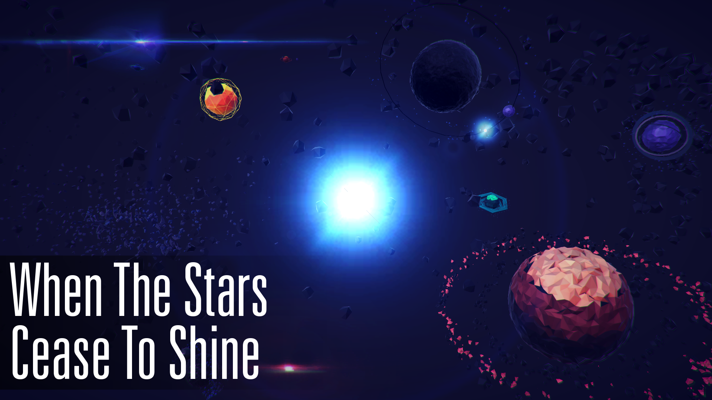
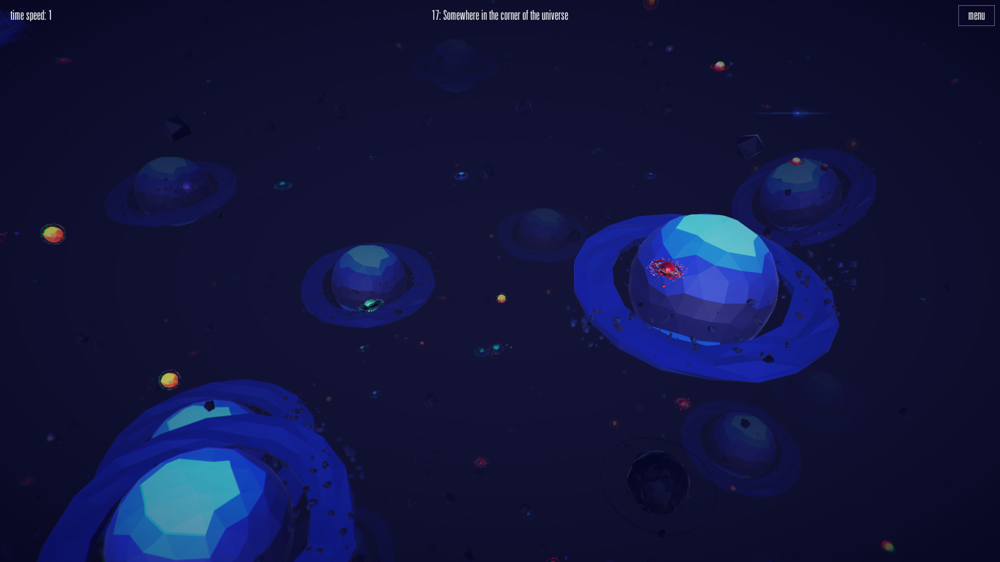
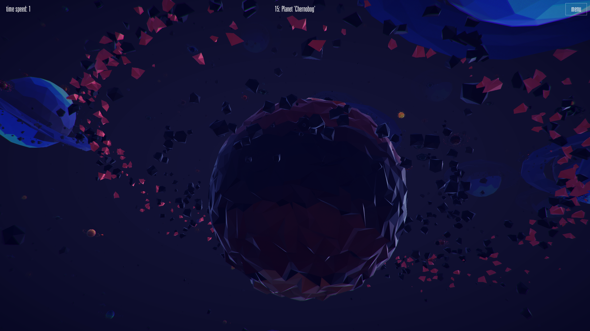
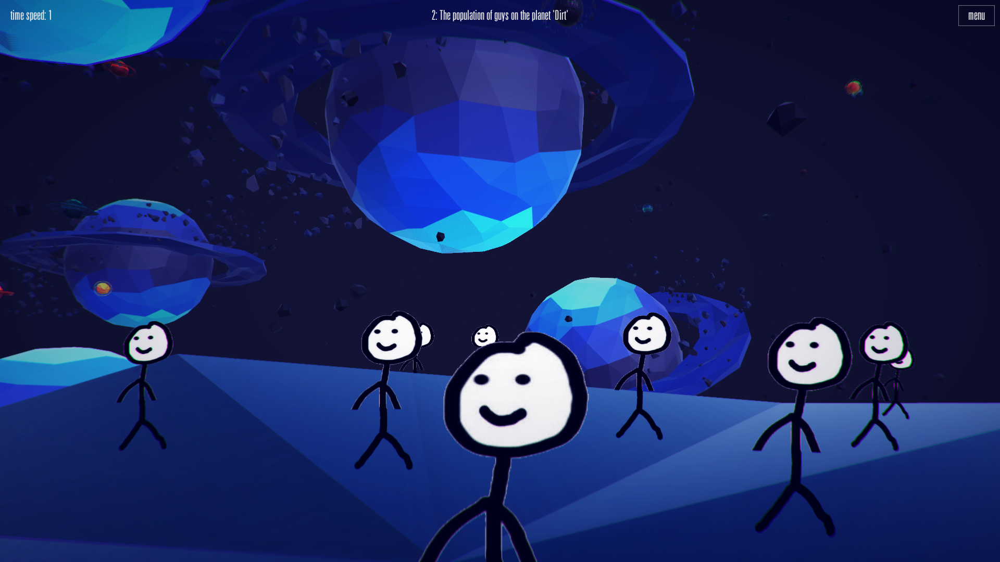
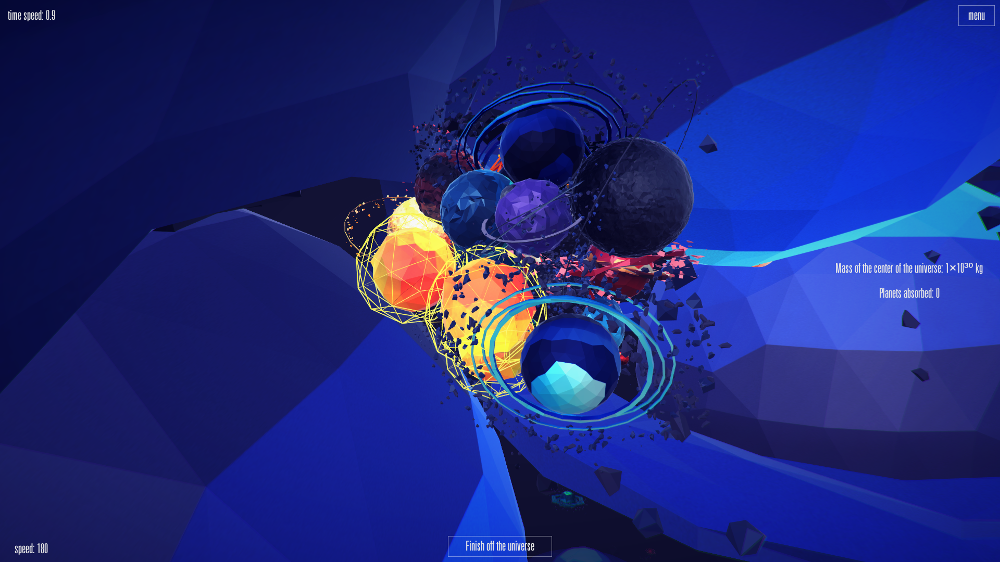

|  |  |
Global warming, asteroid fall, explosion of the Sun. Does that sound scary? What about the death of the whole universe? When The Stars Cease To Shine - a visual simulation that implements possible scenarios of the death of the universe. |
 |
|  | Before you is an endless space filled with stars, planets, quasars and asteroids. Choose how your pocket universe will die, and watch the end of the world under a rich soundtrack. |
Thermal death of the universe can occur due to the infinite expansion of space - space objects will constantly move away from each other and from the center of the universe. The stars run out of fuel and stop burning. The planets will freeze, and the darkness will swallow up space. At some point, the forces of nature will become so small that the electrons will no longer be attracted to protons - matter will cease to exist. |
 |
|  | Great compression. Over time, the expansion of the universe may change into compression. As a result of this phenomenon, all objects will begin to attract each other until all cosmic bodies are reunited into a unique black hole - the singularity of large compression. Its mass and density will increase to such an extent that it will even be able to make a big explosion, which will be the beginning of a new universe. |
Global warming, asteroid fall, explosion of the Sun. Does that sound scary? What about the death of the whole universe? When The Stars Cease To Shine - a visual simulation that implements possible scenarios of the death of the universe.
Before you is an endless space filled with stars, planets, quasars and asteroids. Choose how your pocket universe will die, and watch the end of the world under a rich soundtrack.
Thermal death of the universe can occur due to the infinite expansion of space - space objects will constantly move away from each other and from the center of the universe. The stars run out of fuel and stop burning. The planets will freeze, and the darkness will swallow up space. At some point, the forces of nature will become so small that the electrons will no longer be attracted to protons - matter will cease to exist.
Great compression. Over time, the expansion of the universe may change into compression. As a result of this phenomenon, all objects will begin to attract each other until all cosmic bodies are reunited into a unique black hole - the singularity of large compression. Its mass and density will increase to such an extent that it will even be able to make a big explosion, which will be the beginning of a new universe.